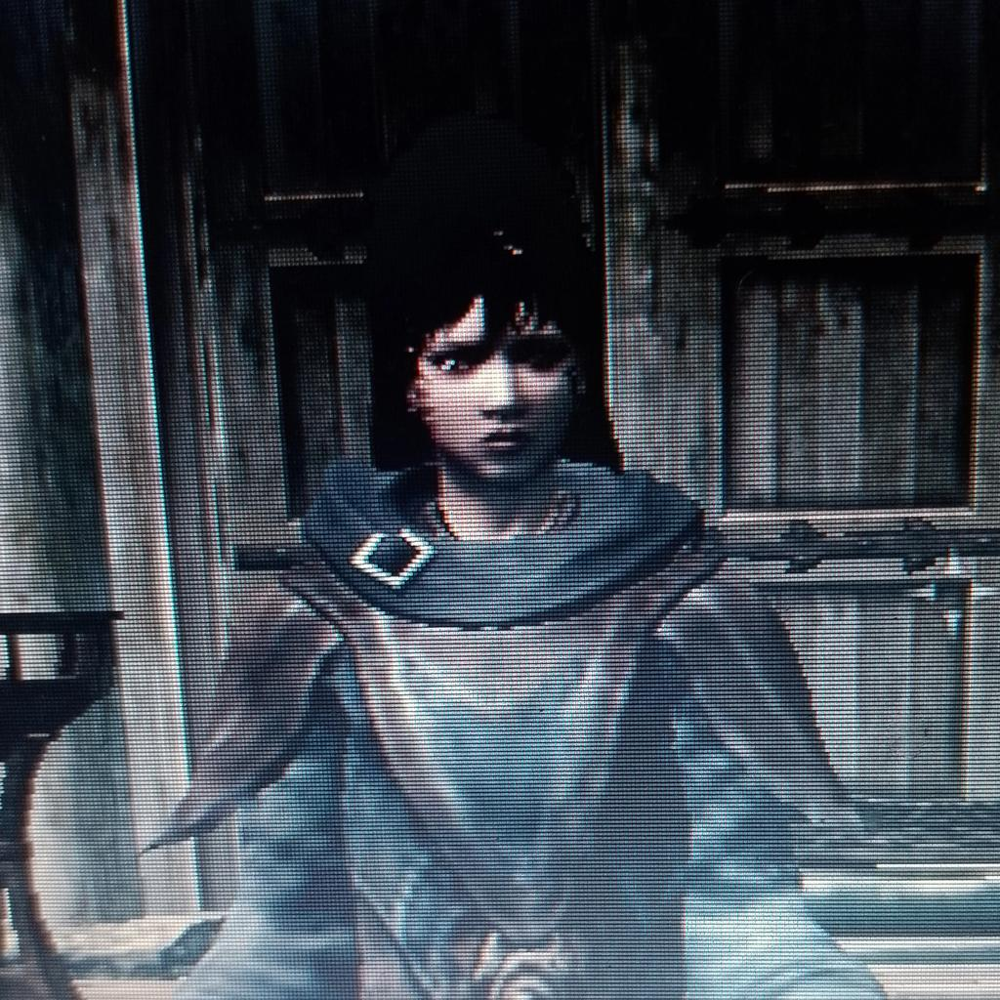

books / manga
- The Ritual
- House of Leaves
- The Fisherman
- Blame!
- Wet Moon
nineteen / cs / intj
CS student by day, quiet writer by night. Mostly spending my hours untangling code, scribbling notebook drafts, and keeping what feels honest.

now playing
sage
paused
profile
I study computer science, but I keep coming back to words. In programming, there is beauty when a system just clicks into place; in writing, there is beauty in taking your time to understand something messy.
I like manga, atmospheric games, songs that loop too well, and books that stay in your head for weeks. This page is where those quiet interests sit together.
Love can make a god of man, faith can convince him that he can.
from a poem I keep returning tosignal
Code solves problems with precision. Writing gives space to things that can't be solved with an algorithm.